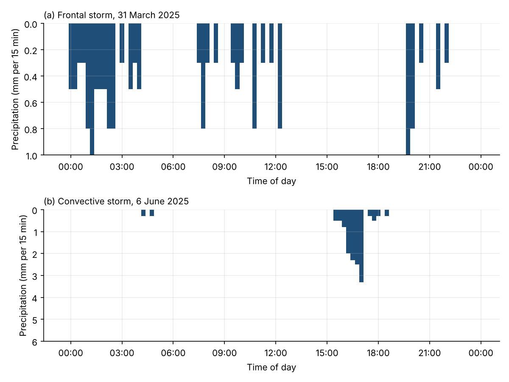
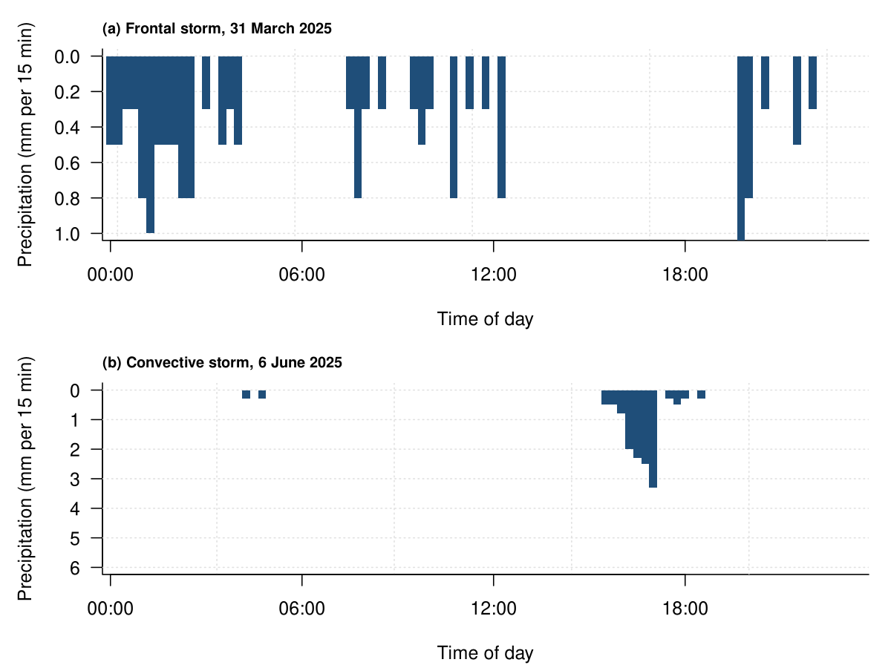
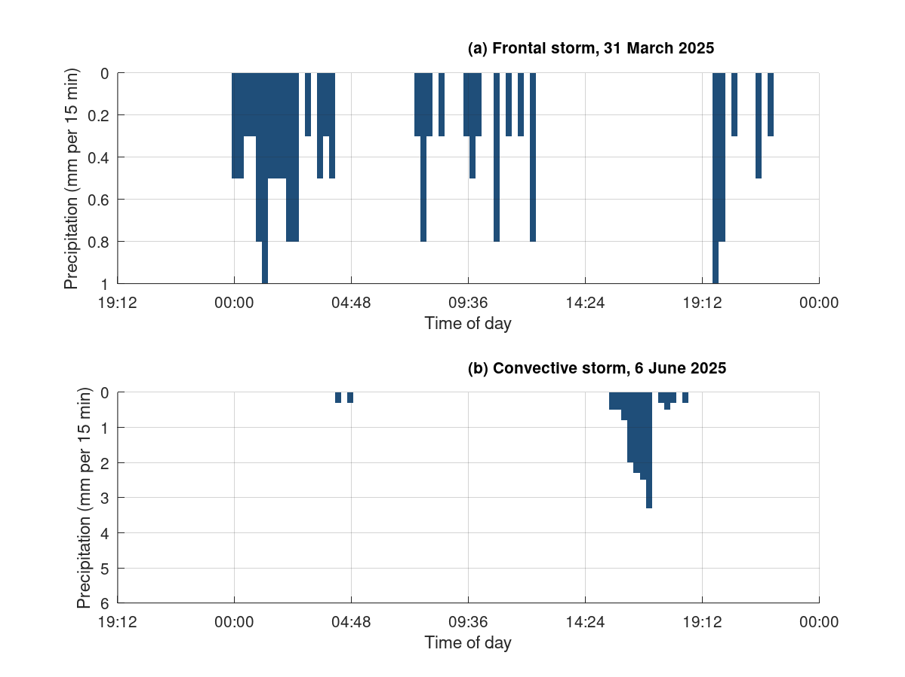

Chapter 3 · Precipitation
Figure 3.9: Hyetographs for a frontal storm (March) and a convective storm (June)
15-minute precipitation, frontal vs convective storm.
Source: Chapter 3 draft; data supplied by chapter author (Figure_3_9_Timeseries.xlsx; Hubbard Brook rain gage, 15-min)
Data: hyetograph_convective_june.csv, hyetograph_frontal_march.csv

Code: hyetographs_frontal_convective.py · image: figure_python.png

"""Figure 3.9: Hyetographs for a frontal storm (March) and a convective storm (June)
Chapter 3 draft; data supplied by chapter author (Figure_3_9_Timeseries.xlsx; Hubbard Brook rain gage, 15-min)
Run: python3 hyetographs_frontal_convective.py -> figure_python.png"""
import numpy as np
import pandas as pd
import matplotlib
matplotlib.use("Agg")
import matplotlib.pyplot as plt
a = pd.read_csv("hyetograph_frontal_march.csv")
a["datetime"] = pd.to_datetime(a["datetime"], format="%Y-%m-%d %H:%M:%S")
b = pd.read_csv("hyetograph_convective_june.csv")
b["datetime"] = pd.to_datetime(b["datetime"], format="%Y-%m-%d %H:%M:%S")
fig, axes = plt.subplots(2, 1, figsize=(8, 6), squeeze=False)
axes = axes[:, 0]
ax = axes[0]
ax.bar(a["datetime"], a["precip_mm"], width=0.010416666666666666, color="#1f4e79", edgecolor="none")
import matplotlib.dates as mdates
ax.xaxis.set_major_formatter(mdates.DateFormatter("%H:%M"))
ax.set_ylim(1.0, 0)
ax.set_xlabel("Time of day")
ax.set_ylabel("Precipitation (mm per 15 min)")
ax.set_title("(a) Frontal storm, 31 March 2025", loc="left", fontsize=10)
ax.grid(alpha=0.25)
for s in ("top", "right"): ax.spines[s].set_visible(False)
ax.xaxis.set_ticks_position("top") if False else None
ax = axes[1]
ax.bar(b["datetime"], b["precip_mm"], width=0.010416666666666666, color="#1f4e79", edgecolor="none")
import matplotlib.dates as mdates
ax.xaxis.set_major_formatter(mdates.DateFormatter("%H:%M"))
ax.set_ylim(6, 0)
ax.set_xlabel("Time of day")
ax.set_ylabel("Precipitation (mm per 15 min)")
ax.set_title("(b) Convective storm, 6 June 2025", loc="left", fontsize=10)
ax.grid(alpha=0.25)
for s in ("top", "right"): ax.spines[s].set_visible(False)
ax.xaxis.set_ticks_position("top") if False else None
fig.tight_layout()
fig.savefig("figure_python.png", dpi=150)

Code: hyetographs_frontal_convective.R · image: figure_r.png

# Figure 3.9: Hyetographs for a frontal storm (March) and a convective storm (June)
# Chapter 3 draft; data supplied by chapter author (Figure_3_9_Timeseries.xlsx; Hubbard Brook rain gage, 15-min)
# Run: Rscript hyetographs_frontal_convective.R -> figure_r.png (base R, no packages needed)
a <- read.csv("hyetograph_frontal_march.csv", stringsAsFactors = FALSE)
a$datetime <- as.POSIXct(a$datetime, format = "%Y-%m-%d %H:%M:%S", tz = "UTC")
b <- read.csv("hyetograph_convective_june.csv", stringsAsFactors = FALSE)
b$datetime <- as.POSIXct(b$datetime, format = "%Y-%m-%d %H:%M:%S", tz = "UTC")
png("figure_r.png", width = 1200, height = 900, res = 150)
par(mfrow = c(2, 1), mar = c(4.2, 4.6, 2.2, 1), las = 1)
plot(NA, xlim = range(c(a$datetime), na.rm = TRUE), ylim = c(1.0, 0), log = "", xlab = "Time of day", ylab = "Precipitation (mm per 15 min)", bty = "l", xaxt = "n", xaxs = "i")
grid(col = "grey88")
axis.POSIXct(1, x = a$datetime, format = "%H:%M")
rect(a$datetime - 900.0/2, 0, a$datetime + 900.0/2, a$precip_mm, col = "#1f4e79", border = NA)
mtext("(a) Frontal storm, 31 March 2025", side = 3, adj = 0, line = 0.5, cex = 0.8, font = 2)
plot(NA, xlim = range(c(b$datetime), na.rm = TRUE), ylim = c(6, 0), log = "", xlab = "Time of day", ylab = "Precipitation (mm per 15 min)", bty = "l", xaxt = "n", xaxs = "i")
grid(col = "grey88")
axis.POSIXct(1, x = b$datetime, format = "%H:%M")
rect(b$datetime - 900.0/2, 0, b$datetime + 900.0/2, b$precip_mm, col = "#1f4e79", border = NA)
mtext("(b) Convective storm, 6 June 2025", side = 3, adj = 0, line = 0.5, cex = 0.8, font = 2)
invisible(dev.off())

Code: hyetographs_frontal_convective.m · image: figure_matlab.png

% Figure 3.9: Hyetographs for a frontal storm (March) and a convective storm (June)
% Chapter 3 draft; data supplied by chapter author (Figure_3_9_Timeseries.xlsx; Hubbard Brook rain gage, 15-min)
% Run: run hyetographs_frontal_convective.m -> figure_matlab.png (works in MATLAB and GNU Octave)
clear; close all;
fid = fopen('hyetograph_frontal_march.csv'); fgetl(fid);
C = textscan(fid, '%s%f', 'Delimiter', ',', 'EmptyValue', NaN); fclose(fid);
a.datetime = C{1};
a.precip_mm = C{2};
a.datetime = strrep(a.datetime, '"', '');
a.datetime = datenum(a.datetime, 'yyyy-mm-dd HH:MM:SS');
a_t0 = floor(min(a.datetime)); a.datetime = a.datetime - a_t0; % offset keeps plotting precision (Octave uses single precision)
fid = fopen('hyetograph_convective_june.csv'); fgetl(fid);
C = textscan(fid, '%s%f', 'Delimiter', ',', 'EmptyValue', NaN); fclose(fid);
b.datetime = C{1};
b.precip_mm = C{2};
b.datetime = strrep(b.datetime, '"', '');
b.datetime = datenum(b.datetime, 'yyyy-mm-dd HH:MM:SS');
b_t0 = floor(min(b.datetime)); b.datetime = b.datetime - b_t0; % offset keeps plotting precision (Octave uses single precision)
figure('Visible', 'off', 'Position', [100 100 800 600], 'Color', 'w');
subplot(2, 1, 1); hold on;
xb = a.datetime(:); yb = a.precip_mm(:); h0 = patch('XData', [xb-0.010416666666666666/2 xb+0.010416666666666666/2 xb+0.010416666666666666/2 xb-0.010416666666666666/2]', 'YData', [zeros(size(yb)) zeros(size(yb)) yb yb]', 'FaceColor', [0.122, 0.306, 0.475], 'EdgeColor', 'none');
ylim([0 1.0]);
set(gca, 'YDir', 'reverse');
xt = get(gca, 'XTick'); set(gca, 'XTick', xt, 'XTickLabel', datestr(xt + a_t0, 'HH:MM'));
xlabel('Time of day');
ylabel('Precipitation (mm per 15 min)');
title('(a) Frontal storm, 31 March 2025', 'FontSize', 10, 'HorizontalAlignment', 'left');
box off; grid on; set(gca, 'GridAlpha', 0.2, 'Layer', 'top');
subplot(2, 1, 2); hold on;
xb = b.datetime(:); yb = b.precip_mm(:); h0 = patch('XData', [xb-0.010416666666666666/2 xb+0.010416666666666666/2 xb+0.010416666666666666/2 xb-0.010416666666666666/2]', 'YData', [zeros(size(yb)) zeros(size(yb)) yb yb]', 'FaceColor', [0.122, 0.306, 0.475], 'EdgeColor', 'none');
ylim([0 6]);
set(gca, 'YDir', 'reverse');
xt = get(gca, 'XTick'); set(gca, 'XTick', xt, 'XTickLabel', datestr(xt + b_t0, 'HH:MM'));
xlabel('Time of day');
ylabel('Precipitation (mm per 15 min)');
title('(b) Convective storm, 6 June 2025', 'FontSize', 10, 'HorizontalAlignment', 'left');
box off; grid on; set(gca, 'GridAlpha', 0.2, 'Layer', 'top');
print('-dpng', '-r150', 'figure_matlab.png');